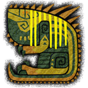
大凶豺龍
通常種 · great-jagras.webp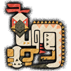
搔鳥
通常種 · kulu-ya-ku.webp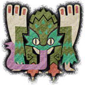
毒妖鳥
通常種 · pukei-pukei.webp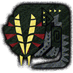
大凶顎龍
通常種 · great-girros.webp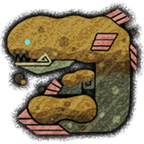
泥魚龍
通常種 · jyuratodus.webp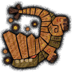
土砂龍
通常種 · barroth.webp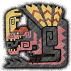
蠻顎龍
通常種 · anjanath.webp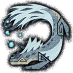
飛雷龍
通常種 · tobi-kadachi.webp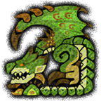
雌火龍
通常種 · rathian.webp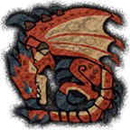
火龍
通常種 · rathalos.webp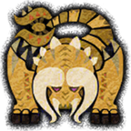
角龍
通常種 · diablos.webp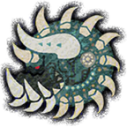
骨鎚龍
通常種 · radobaan.webp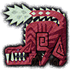
慘爪龍
通常種 · odogaron.webp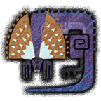
眩鳥
通常種 · tzitzi-ya-ku.webp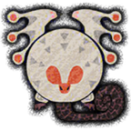
浮空龍
通常種 · paolumu.webp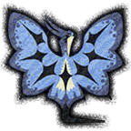
風漂龍
通常種 · legiana.webp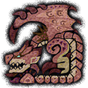
櫻火龍
通常種 · pink-rathian.webp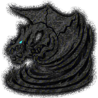
鋼龍
通常種 · kushala-daora.webp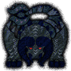
黑角龍
通常種 · black-diablos.webp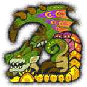
融光種雌火龍
融光種 · radiant-rathian.webp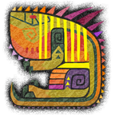
融光種大凶豺龍
融光種 · radiant-great-jagras.webp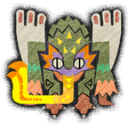
融光種毒妖鳥
融光種 · radiant-pukei-pukei.webp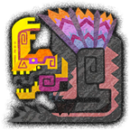
融光種蠻顎龍
融光種 · radiant-anjanath.webp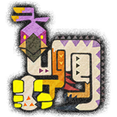
融光種搔鳥
融光種 · radiant-kulu-ya-ku.webp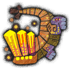
融光種土砂龍
融光種 · radiant-barroth.webp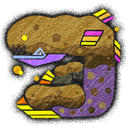
融光種泥魚龍
融光種 · radiant-jyuratodus.webp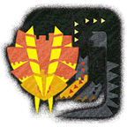
融光種大凶顎龍
融光種 · radiant-great-girros.webp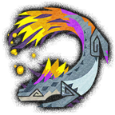
融光種飛雷龍
融光種 · radiant-tobi-kadachi.webp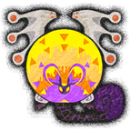
融光種浮空龍
融光種 · radiant-paolumu.webp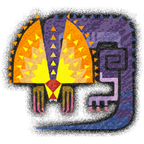
融光種眩鳥
融光種 · radiant-tzitzi-ya-ku.webp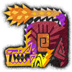
融光種慘爪龍
融光種 · radiant-odogaron.webp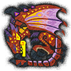
融光種火龍
融光種 · radiant-rathalos.webp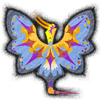
融光種風漂龍
融光種 · radiant-legiana.webp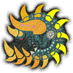
融光種骨鎚龍
融光種 · radiant-radobaan.webp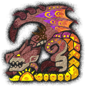
融光種櫻火龍
融光種 · radiant-pink-rathian.webp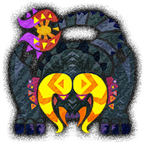
融光種黑角龍
融光種 · radiant-black-diablos.webp